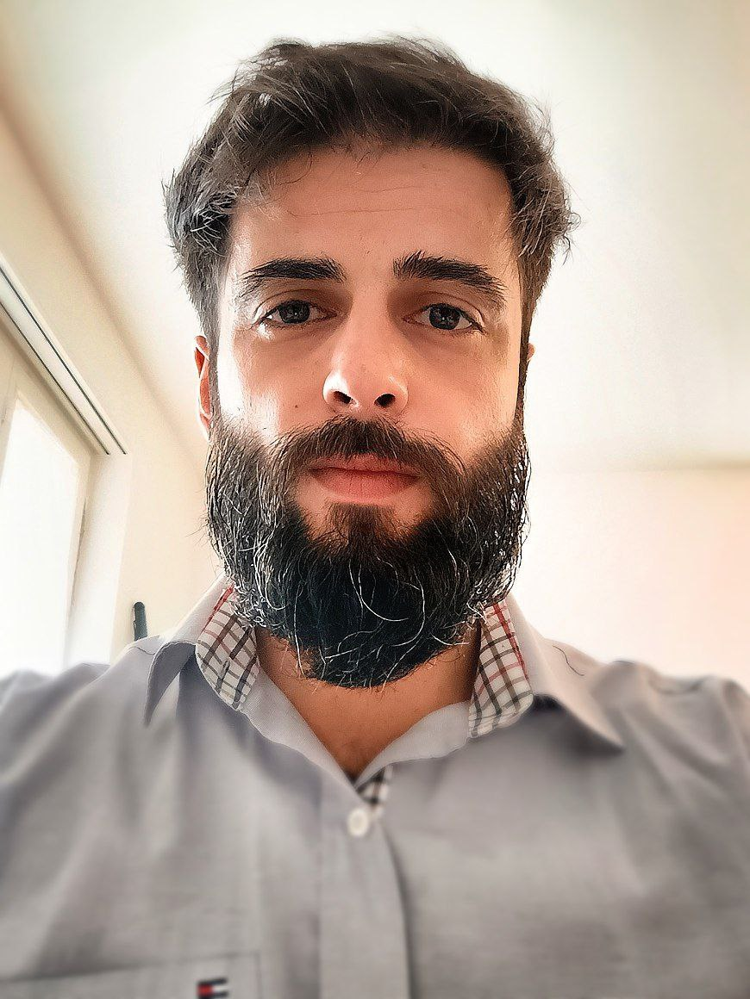

Arthur Capozzi
Data Science and Network Analysis
About Me
Hello! I’m Arthur Capozzi. I am passionate about data! I am a skilled data scientist and a network science enthusiast.
I have worked on many projects and collaborated with various realities and working groups, both university and business oriented.
Work Experience
Research fellowship at ISI Foundation, Turin
Nov, 2019 - Nov, 2020
Lagrange applied research fellowship on social media analysis, data science, machine learning, and NLP
Teaching Assistant of Web Technologies at Computer Science Department of Turin
Set, 2018 - Set, 2022
Research Scholarship Talenti Società Civile at Computer Science Department of Turin
Feb, 2019 - Nov, 2019
Thanks to a research fellowship of Fondazione CRT I worked on a project that aim to study the different aspects of the quality of life in the districts of Torino and how the population’ perception diverges from the real data. This project was in collaboration with the ARCS research group.
Coordinated and Continuous Collaboration Contract at Acmos association
Aug, 2018 - Jan, 2019
This project, funded by European tender, was born from the collaboration between Acmos and the Computer Science Department. The purpose of this project was to analyze the spreading of hate speech on social media in Italy. I had the opportunity of improving my knowledge on data visualization, NLP and machine learning.
Research fellowship at Computer Science Department of Turin
Nov, 2017 - Jul, 2018
Working, thanks to a research fellowship, in a project that aimed to study and analyze the spreading of hate speech in the social media in Italy.
Thesis Stage at Innovation Center, Intesa San Paolo, Turin
May, 2017 - Jul, 2017
The work consisted of analyzing data and creating a dashboard to identify suspicious payments and money laundering.
Shop Assistant at Mipatrini music shop, Perugia
May, 2006 - Jul, 2014
Working as a shop assistant in a music and instruments shop in Perugia.
Publications
Publication at WEB CONFERENCE 2023
2023
The Thin Ideology of Populist Advertising on Facebook during the 2019 EU Elections, A. Capozzi, G. D. F. Morales, Y. Mejova, C. Monti, A. Panisson, in Proceedings of the ACM Web Conference 2023 (WWW '23), May 1-5, 2023, Austin, TX, USA. ACM, New York, NY, USA, 11 pages
Best paper award at CHI 2021
2021
Clandestino or Rifugiato? Anti-immigration Facebook Ad Targeting in Italy, A. Capozzi, G. D. F. Morales, Y. Mejova, C. Monti, A. Panisson, and D. Paolotti, in Proceedings of the 2021 CHI Conference on Human Factors in Computing Systems 2021 May 6 (pp. 1-15).
Link to the data exploration dashboard I developed.
Link to the data exploration dashboard I developed.
Best runner-up paper at SocInfo 2020
2020
Facebook Ads: Politics of Migration in Italy, A. Capozzi, G. D. F. Morales, Y. Mejova, C. Monti, A. Panisson, and D. Paolotti, in Proceedings of the 12th International Conference on Social Informatics, SocInfo 2020, Pisa, Italy, 6-9 Oct., Lecture Notes in Computer Science. Springer, 2020.
Education
PhD in Computer Science at University of Turin
Nov 2020 - Now
Main work on complex newtork and applied machine learning.
Master’s Degree in Computer Science at University of Turin
2014 - 2017
Course of study focused on image processing algorithms.
Thesis during an internship in Intesa San Paolo. The work consisted of analyzing data and creating a dashboard to identify suspicious payments and money laundering.
Thesis during an internship in Intesa San Paolo. The work consisted of analyzing data and creating a dashboard to identify suspicious payments and money laundering.
Bachelor’s Degree in Computer Science at University of Perugia
2009 - 2013
Thesis on an novel algorithm based on Particle Swarm Optimization and Differential Evolution.